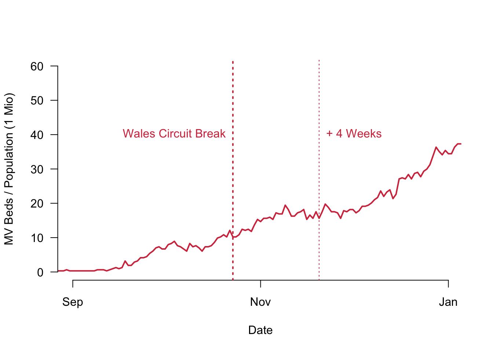
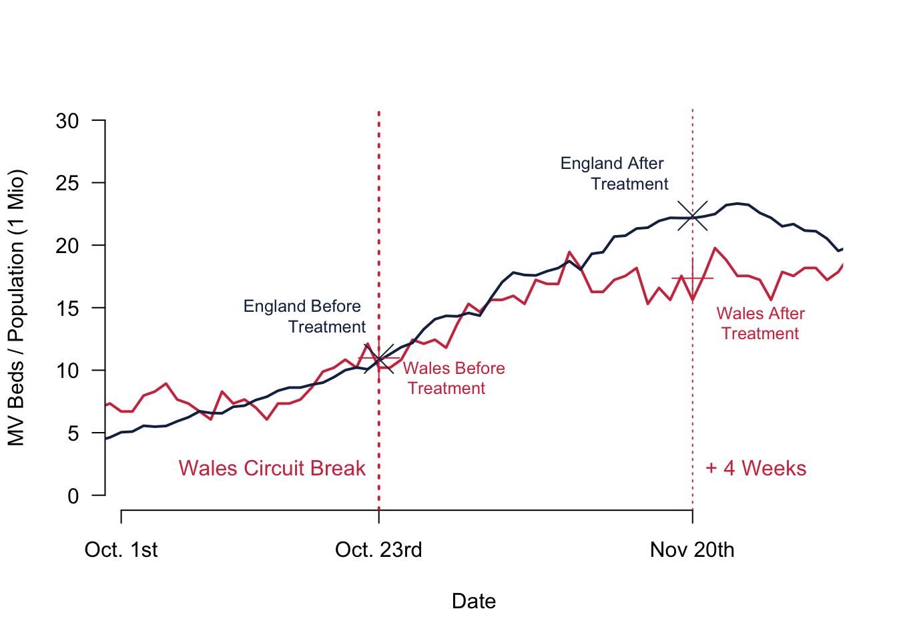

Chapter 9 Causal Statements from Observational Data
Last week, we were taking a look at randomised control trials. While they are of course great in generating internal validity, they are not always easy to implement and we may need alternatives for practical reasons. Let me help frame this week’s discussion in this video.
9.1 This Week’s Data: The Effect of the Welsh Circuit Break
Let me introduce the data that we will be using for this week. I downloaded data on manual ventilation beds due to COVID-19 in autumn 2020. The data from Wales is publicly available here and the data for England can be downloaded here. I then used the overall population of Wales and England to calculate how many MV beds are being used per 1,000,000 inhabitants. The Figure is plotting the resulting daily time-series from September 1st 2020 until the end of 2020.

What you can see is that the numbers were increasing from September onwards. In October, the Welsh government announced the Circuit Break that would start on October 23rd and everybody had to stay at home. The way Corona works, it is reasonable to assume a four weeks lag before the policy is actually becoming effective. Apparently, between being infected and being able to transmit the virus further on, there is normally a one to two weeks lag. And then you can add another two weeks until the critical patients become so severely ill that the patient would have to use an MV bed. So the date that we should pay attention to when we want to understand whether the policy has become effective is around November the 20th. England introduced a stay home order as well, but this only came effective on November the 5th, so almost two weeks after. It is reasonable to assume that this policy will take effect only in the first week of December.
We will use this example to study the causal effect of the Welsh circuit break. How did the policy affect the pandemic situation measured by the use of envy beds per 1,000,000 population?
Remember that our goal is to calculate the treatment effect from a policy. What difference does the policy make? The definition of the causal effect means that we are interested in the difference between the world as it is with the new policy and the world without that policy. Obviously, both states cannot be observed at the same time.
9.2 Compare Treated from One Group to the Non-Treated of Another Group
One solution to this problem would be to compare units that have been treated to units that have not been treated. In a policy context, we could for example compare the country where a policy is enacted with another country that does not have this policy.
What would that mean for the Welsh circuit breaker? We could compare the policy outcome in Wales to what is going on in England. The calculation is actually pretty straightforward: we take the seven day average of Wales during the week of November 20th (17.36) and compare it to the same time in England (22.35). The difference between the two would be our estimate for the causal effect: -4.99 MV beds per 1 Million inhabitants.
All this rests on a fairly strong assumption: we are actually comparing Wales to England. Now, is that a fair comparison to make? You might rightfully say that this might not be a good idea, simply because Wales and England are different on very many levels.
From a more systematic point of view, we might fall prey to an important bias that can influence your results: the confounding bias. Confounding bias happens when a pretreatment variable is related to the treatment and the outcome at the same time. In our case, this could be for example the quality of the NHS. A better performing Welsh NHS would inform Welsh politicians in a better way and therefore affects the likelyhood that a new policy is enacted. At the same time, a better NHS of course can care for its patients in better way, which is why it is also likely to affect the outcome. There are ways to control for this influence and we will take a closer look at them next week. But for now suffice it to say that it is not a good idea to “just” compare two different countries, one with the treatment and one without.
9.3 Compare the Treated Before and After their Treatment
So comparing different countries does not make a lot of sense. But what about comparing a unit with a treatment to its state just before the treatment? Or, in the context of our policy evaluation, why not comparing the country with a policy enacted with the same country, but before the policy actually came into force?
Indeed, comparing the same units before and after policy intervention will make sure that the units are the same. But, are they really the same? Note that meanwhile some time has gone past. This means that a lot of things apart from our new policy might have changed and the environment for the policy might be a different one.
Let us take a look at the Welsh MV beds again, in particular around the 20th of November at the finely dotted line. Compare the figures to what happened on October 23rd when the Wales circuit break actually came into force. During these two points in time, the number of empty beds actually was rising and did not remain flat or was even going down. This is simply due to the fact that the whole environment in Wales changed and the Corona situation was completely different then.
To estimate the causal effect in this way, we would take the seven day average of Wales during the week of November 20th (17.36) and compare it to the week of October the 23rd for example (10.98). The difference now would be 6.38 MV beds per 1 Million inhabitants. Any intuition with the numbers would tell us that this cannot be correct.

What happens is that we are again observing a confounding factor that biases the estimation of the causal effect. This time it is a time-varying confounder.
In short, we need something that can clearly combine the best of both worlds: making sure that we neither bias our results due to pre-treatment counfounders nor time varying confounders.
9.4 Best of Both Worlds: The Difference-in-Difference Estimator
Can you have it both ways? Indeed, you can. The estimator that will solve a lot of our problems is called the difference-in-difference estimator. What it does is it calculates the difference between the treated group before and after the treatment and subtracts from it the difference in the control group before and after the treatment.
This is the formula for the difference-in-difference estimator. You can use it to calculate the sample average treatment effect for the treated (SATT).
\[ \text{DiD estimate} = \left(\overline{Y}_{\text{treated}}^{\text{after}} -\overline{Y}_{\text{treated}}^{\text{before}} \right) - \left(\overline{Y}_{\text{control}}^{\text{after}} -\overline{Y}_{\text{control}}^{\text{before}} \right)\]
Here is a quick video where I explained the core intuition and show how to calculate everything on the basis of the figure below.
How do we get around the two assumptions? As explained in the video:
- We account for the time varying confounders by comparing the difference between two times two points in time.
- We account for confounding pretreatment variables by comparing the difference between two times two points in time.
Remember that we buy this leverage by making a third assumption: the outcome variables are following a parallel trend without the treatment. How can you check this assumption? Simply look at the data.

Given what we see in our figures, this assumption is met fairly well. Even better: for the MV beds in our sample it is not only a similar trend—which means that both lines should have the same slope—both curves actually overlap pretty much. This parallel trend assumption is therefore really well fulfilled for our example.
Let us calculate the SATT. We take the seven day average of Wales during the week of November 20th (17.36) and subtract the seven day average of Wales during the Week of October 23rd (10.98), which gives us a difference of 6.38.
Then we do the same for our control group England. We calculate the seven day average of England during the week of November 20th (22.35) and subtract the seven day average of England during the Week of October 23rd (10.91), resulting in a difference of 11.44.
Last step: To calculate the sample average treatment effect of the treated (SATT), we subtract the two differences from one another once more 6.38 - 11.44 = -5.06 MV beds per 1 Million inhabitants.
Note that this result is remarkably close with our very first result when we simply compared Wales to England. Why is this the case? It is, because Wales and England not only share the same trend before the treatment, but their values are actually really close to one another.